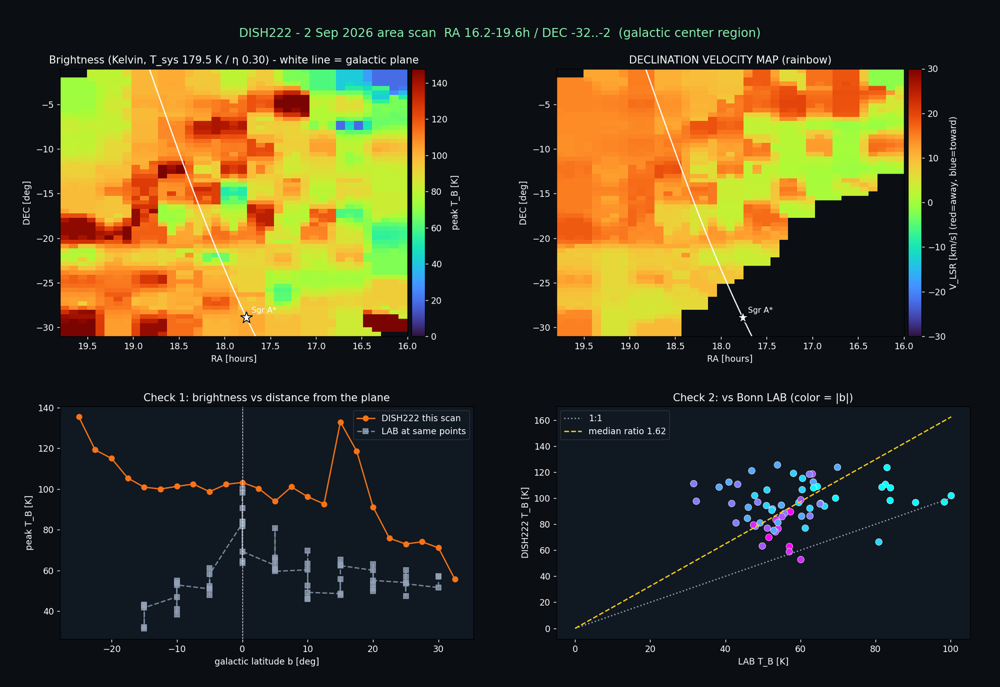

Step 3 · Data to Science
How an averaged spectrum becomes a map of the Galaxy
An explanatory walk through the chain used for DISH222 data. Each step says what is done and which parts are established, historical or still provisional. It explains the ideas, not the software.
Three transformations
From what was recorded to what it means
Every scientific product starts as a recording. Three transformations turn it into physical quantities. Each has assumptions, and each changes a measured quantity into a derived one.
1. Solar time → sidereal time → Right Ascension
A fixed zenith telescope never moves. The Earth rotates, so the sky drifts through the beam. Each spectrum carries only a clock time.
Clock time becomes sidereal time, then Local Sidereal Time (LST). For a zenith-pointing dish, the Right Ascension at the beam centre is approximately the LST. The declination stays near the site latitude.
RA ≈ LST, Dec ≈ site latitude
Details: Solar time → sidereal time → Right Ascension.
2. Frequency → velocity
Spectra are recorded in frequency. The Doppler shift of the 21-cm line gives the gas velocity along the line of sight.
v_topo = c (f0 - f_obs) / f0, f0 = 1420.40575 MHz
This velocity is relative to the telescope. It can be converted to other reference frames: heliocentric, barycentric and the Local Standard of Rest (LSR). The frame must always be stated.
Details: Frequency → velocity.
3. Relative intensity → temperature
A raw spectrum has an arbitrary power scale. Calibration converts it to a physical temperature in kelvin.
Calibration rests on assumptions and on separate measurements. It carries uncertainty. DISH222 products keep the calibration epoch they were made with (C0 to C4; C4 is current).
Calibration of the historical fixed-dish spectra is under validation.
Details: Relative intensity → temperature.
Engineering to Science
The endpoint: a brightness-temperature data product
The conceptual endpoint is the H I brightness-temperature data product (\(T_B(\alpha,\delta,v_{\mathrm{LSR}})\)), connecting signal processing to sky coordinates and velocity.
- α
- Right Ascension
- δ
- Declination
- vLSR
- Radial velocity relative to the Local Standard of Rest
- TB
- H I brightness temperature
Worked example
The full DISH222 chain, step by step
The three transformations above, followed through the steerable telescope's real data from native spectrum to Galactic map.
No complete observational product has yet been independently reproduced end-to-end, from native spectra to a final science product. Individual calibration calculations have been checked independently; for example, the C4 eight-point fit was reproduced exactly from its published table. The steps below describe how the existing products were made, using the legacy observing software and external processing whose code is not in the archive. Rebuilding this chain with documented, testable code is the first research track.
Measurement
-
Telescope and SDR measurement
The dish points at a sky position and the software-defined radio samples a 2.4 MHz-wide band around the hydrogen line. The computer immediately turns short blocks of samples into power spectra with a Fourier transform (1024 frequency channels).
-
Averaged spectrum L0
A single spectrum is dominated by noise, so thousands are averaged. Every few tens of seconds the software writes one averaged power spectrum to disk. These files are the native data of the project. They are not raw radio samples, and they are on an arbitrary power scale.
-
Metadata and pointing L1
A scan manifest records the planned sky positions and times. Each averaged spectrum is matched to a position by its timestamp. The manifest stores the commanded position, not an independent measurement of where the dish pointed, which is one reason pointing checks matter.
Reduction
-
Baseline and bandpass L2
The receiver's response is not flat across the band. A smooth baseline is fitted to line-free channels on either side of the hydrogen line and removed, leaving the line as a small excess over the baseline. For wide native spectra, a bandpass template measured from the session itself removed a strong slope. The result is a relative scale, usually quoted in dB above the baseline.
-
RFI handling
Radio-frequency interference is anything that is not sky signal. DISH222 sees a permanent spur exactly at 1420.000 MHz and narrow spurs from its motors. Real Galactic hydrogen is broad, so a minimum line width filters out narrow spikes. Quality gates reject spectra whose line-free channels are not flat: in the 26 Aug session 661 of 776 spectra passed.
-
H I line measurement
After baseline removal the line strength is expressed as a fractional excess over the baseline:
f = P_line / P_baseline - 1 = 10^(x/10) - 1where x is the line height in dB. Two summaries appear in the archive: the peak of a smoothed spectrum (26 Aug products) and the intensity-weighted mean velocity, or first moment (2–3 Sep products). They answer different questions and are not directly comparable.
Physics
-
Frequency to radial velocity
Gas moving away from us shifts the line to lower frequency. The Doppler formula converts an observed frequency into a velocity relative to the telescope:
v_topo = c (f0 - f_obs) / f0, f0 = 1420.40575 MHzThe Earth's rotation and orbit, and the Sun's motion, are then removed so that velocities refer to the Local Standard of Rest (LSR). For the 26 Aug products this meant adding a barycentric correction and the standard 20 km/s solar motion towards RA 18h03m50s, Dec +30°00′17″.
-
Calibration L3
Calibration turns the relative line strength into a brightness temperature in kelvin. The current reference scale (C4) is
T_B = (f - p) Gwith a conversion constant G and a small pedestal p. The scale went through five stages, and every archived product keeps the stage it was made with. See Calibration.
-
Sky positioning
Each spectrum is assigned the sky coordinates of its pointing and converted between equatorial (RA, Dec) and Galactic (l, b) frames. Spectra taken within about one beam radius of each other are stacked to reduce noise. With a beam about 3° wide, every map is inevitably smooth on scales smaller than a few degrees.
Products and interpretation
-
Spectral cube L4
Gridding spectra onto regular sky pixels, with velocity as the third axis, gives a position–position–velocity cube (FITS format). The 26 Aug cube covers l 146°–228°, b −12° to +22° and −120 to +60 km/s. See the lecture on data cubes.
-
Maps and science products L5 L6
Collapsing the cube gives maps: peak brightness, velocity (moment maps) and catalogues. Curated products go further, combining sessions or applying selection rules and corrections. Every such step changes what the product can be used for, so it is recorded.
-
Comparison with reference surveys
The Leiden/Argentine/Bonn (LAB) survey is a professional all-sky H I survey. Comparing DISH222 with LAB smoothed to a 3° beam tests shapes, velocities and brightness. It is a validation, and in C4 also the reference for the kelvin scale, so it is not an independent absolute calibration. Known reasons for differences are beam dilution, stray radiation entering through sidelobes, baseline choices and pointing.

L7 · visualizationC2 · historical scale What it shows: the 2 Sep 2026 Galactic-centre area scan with two checks against LAB. When: produced on 2 Sep 2026 with the C2 scale (Tsys 179.5 K, η 0.30). What to learn: the velocity field looks reasonable, but brightness comes out about 1.6 times LAB and does not fall off away from the plane. Discrepancies like this one led to the later calibration work. The brightness values are not on the current scale. -
Interpretation
Velocities along a line of sight map onto distance through the Galaxy's rotation, which is how spiral arms and the rotation curve are traced. Interpretation is the last step for a reason: it inherits every limitation above. In the project's early comparison with LAB (on the relative scale), the velocity–longitude pattern of the outer Galaxy matched LAB closely, but the peak metric compressed the rotation amplitude by roughly a factor of four.
Learn the principles in the lecture
Lecture slides 33–43 cover the generic observation workflow, hot–cold calibration, baselines and LSR correction. Slides 44–51 cover moment maps, data cubes and column density.
See it on real data
Every step above can be followed through the 26 Aug 2026 campaign, from native spectra (L0) to cube (L4), maps (L5) and figures (L7).
Ready for a question of your own? The Research tracks start from these same transformations: reproduce a reduction, test a calibration, or rebuild a map.